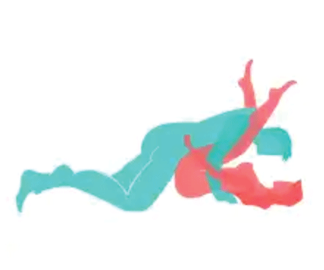
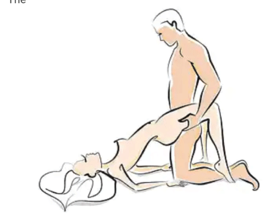

For a sex to be maximally enjoyed, it should be 1. powerfully effective 2. Efficient to execute 3. easy to do orgasms can be referred to rush of sexual excitement or the climax or peak, of sexual pleasure during a sexual activity the goal of this Article is not aimed to teach how to create orgasms for women. with the fingers, tongue, or with a vibrator, those are easily achievable, and so widespread, that there is no surprise to it(although they are effective too) .. the goal is to educate on penile-vaginal orgasm ie making her cum with your dick based on everything studied and read, these were the fundamentals of sex: 1. Passion is key. Sex is every bit as much a mental and emotional experience as it is a physical one. Women had the most exciting, fulfilling experiences with passionate men... and by nature, I am one of the most dispassionate individuals you will meet. I knew I needed to simulate passion, and eventually learn it for real. 2 Physical contact is best maximized. Another thing I suspected was extremely important was maximizing physical contact - getting your skin contacting as much of her skin as possible. This makes the sex much more personal, and much less clinical, and increases the release of pleasure and bonding hormones that occurs with skin contact between a man and a woman. 3. You need both clitoral and vaginal stimulation. What I was reading again and again and again was that women wished more men would stimulate their clitoris during sex, and so many men were ignorant of this. Yet, the clitoris was outside and above the vagina... and I didn't want to be just using my hand or my mouth, because 4.Penetrative sex is REAL sex. Just like she's not really your girlfriend if you're not having sex with her, it's not really sex if your penis isn't in her. Women know this, and while they enjoy men who give them orgasms with other parts of their bodies - tongues, fingers, hands, sex toys - these men aren't real men the way men who make women cum with their penises are. If you want to maintain a woman's respect and attraction at the uppermost levels - and in my mind, that's the #1 reason to bother giving her orgasms at all in the first place - you need to be making her cum with your penis, not your tongue / fingers. 5.Rhythm is non-negotiable. Hidden deep within the tomes I was reading on sex, I discovered an emphasis on rhythm that seemed largely devoid from much of the lighter and more mainstream sex advice stuff I perused. Rhythm was why women found men who danced well sexy and suspected they'd be good in bed - and it was also why once a girl went black she didn't go back. Black men - on average - had rhythm; white men - on average - did not. I further learned that women enter a trance-like state during good, rhythmic sex, that is necessary for and precedes orgasm. The men shifting around and thrusting arrhythmically prevent women from ever entering this trance - and prevent them from ever climaxing, too. 6. Dominance is mandatory. Women want to be taken... not asked. I learned that asking her, "Is this okay?" or, "Was that good for you?" are big no-nos that make you seem inexperienced and like you don't know what you're doing. A woman wants to feel like you know her body better than she does, and know what's best for her better than she does... she wants to be able to just relax, enjoy the ride, and let you do what you know how to do so well without having to worry or think about anything other than how good it feels and how good you are. You must know what you're doing, and tell her what to do / move her around dominantly and confidently and self-assuredly. HOW TO MAKE A GIRL ORGASM, HARD AND FAST I don't know if there's a common name for this sex position; in the years I've shared it with close friends, I've had one person show me something that described the same position. I forget what it was called there. I've never seen it anywhere else. Well nigh everyone I've asked to try it out has reported having his girls orgasm off of it, usually on the first try. In fact, the first friend of mine who tried it out, I was hanging out in the other bedroom in his house when he did - he didn't know I was there - and I listened to him make a girl scream at the top of her lungs for five minutes. Here's the position - I call it "adapted missionary," and it looks very much like this:
The only difference between the position itself and the picture above is that normally you'll have your hands not holding her hands but holding her shoulders from underneath. Here's how this differs from an ordinary missionary position: 1. Forearm and elbow support. Ordinary missionary position entails a man raised up above the woman's body, supported by his hands and wrists. For obvious reasons, this is a pretty tiring position - it takes a lot of work to hold yourself up that much! When you're supporting yourself with your forearms and elbows instead though, you tire out much more slowly - and can last far longer. This also allows you to maintain much more control over your bodily motions, making it significantly easier to keep a steady thrusting rhythm. 2. Full body contact. Unlike ordinary missionary, where you're holding yourself above the girl, in adapted missionary your body is on top of hers, creating a much more intimate experience, and prompting the release of more pleasure and bonding chemicals in her brain, increasing her enjoyment. 3. Altered thrust angle. The one "complaint" I've had from friends who've tried this position out is that they enjoyed the sex somewhat less. That's because this position gives you a very "clean" angle of entry into a woman's vagina - you're going right in, with little in the way, which means less pressure on your penis shaft, and a bit less pleasure for you. On the other hand, it allows for deeper penetration, which means you more easily reach the back wall of her vagina with the end of your penis - and vaginal back wall stimulation is how you trigger the most powerful vaginal orgasms. 4. Pelvic rubbing and clitoral stimulation. Because of the position your body is in, your pelvis slides back and forth against hers - stimulating her clitoris in the process. Rather than an up and down motion, like you'd have with a standard missionary position, where her clitoris gets virtually no stimulation, in adapted missionary this back and forth rubs her clitoris constantly. 5. Shoulder grip for added oomph. As you get closer to orgasm, you'll want to thrust into her harder while maintaining the same rhythm, to hit the back wall of her vagina harder and to rub her clitoris harder. Because your hands are wrapped around her shoulders from behind and underneath, you're able to not just thrust forward, but pull her downward as well. This roughly doubles the strength you can thrust with, and is pretty exciting for her too. You can feel the difference just by letting go of her shoulders and thrusting, then grasping them and thrusting. Big difference in power. intermediate and advance tips
One of the better positions for deep penetration in a girl is this one: You can do this similar to missionary, but with a girl's knees crooked over your shoulders. This one gives you great, deep penetration - which you may find is too much at the start of sex, especially if you have a longer penis. Tips on this one: 1 The more you bend down over the girl (and the closer you bend her knees back towards her chest), the deeper the penetration you'll get with her, and the more exciting the position becomes because of the strain you're putting on her legs 2 If you have a large/long penis, try this one out, but you'll often find you can't use it until your girl starts getting reasonably close to climax, or else she finds this position too uncomfortable - she'll complain or pain or discomfort in her lower abdomen (that's you pushing too hard on her vaginal back wall). You may also sometimes find that while she'll have really powerful, exciting orgasms, she'll also be pretty sore after cumming this way, too 3 Some women enjoy this position more than adapted missionary, others less so - it depends on the girl. Try both with her, and see which one you get more miles out of 4 Legs-over-shoulders is typically best as a "finishing move" - once she starts getting close to orgasm, shift her into this position to make her cum harder. Or, if you've already given her a few orgasms in another position, switch her into this one to keep the orgasms flowing by stimulating her in a newer and more powerful way.
PELVIS HOIST here u get up on your knees out of adapted missionary, grasp the girls buttocks, and hoist her pelvis up into the air. Then, holding her pelvis up with one of your hands beneath each of her glutes, start thrusting hard, and she would be cumming in minutes. this one is HARD and WILL tire you out. Don't expect to do it for long unless you're in fantastic shape (on the plus side, it's certainly good exercise). You'll see guys talking about shagging girls with pillows under their butts; this position is that, on steroids, with a can of Red Bull to boot. Tips for maximizing the experience: 1.If you need to up your own excitement, watch yourself thrusting into and out of her. It's a lot more visually stimulating when you see your penis in her vagina 2.If you don't mind the strain of holding her lower body up with one hand for a moment, you can use your other hand to slap her clitoris or rub it... both very enjoyable for her 3.If you start getting winded but want to continue in this position, ask her to support her lower body with her toes, or have her prop her butt up with her hands beneath it and elbows on the bed CODE - Botswana8
 IF YOU SEE THIS 8 SIGNS, THE GIRL WANTS YOU TO TALK TO HER ASAP!!!
IF YOU SEE THIS 8 SIGNS, THE GIRL WANTS YOU TO TALK TO HER ASAP!!!
 LADIES TAKE NOTE: THIS IS THE MAJOR REASON WHY YOUR MAN LEAVES YOU FOR ANOTHER WOMAN, ONCE HE MAKES MONEY--
LADIES TAKE NOTE: THIS IS THE MAJOR REASON WHY YOUR MAN LEAVES YOU FOR ANOTHER WOMAN, ONCE HE MAKES MONEY--